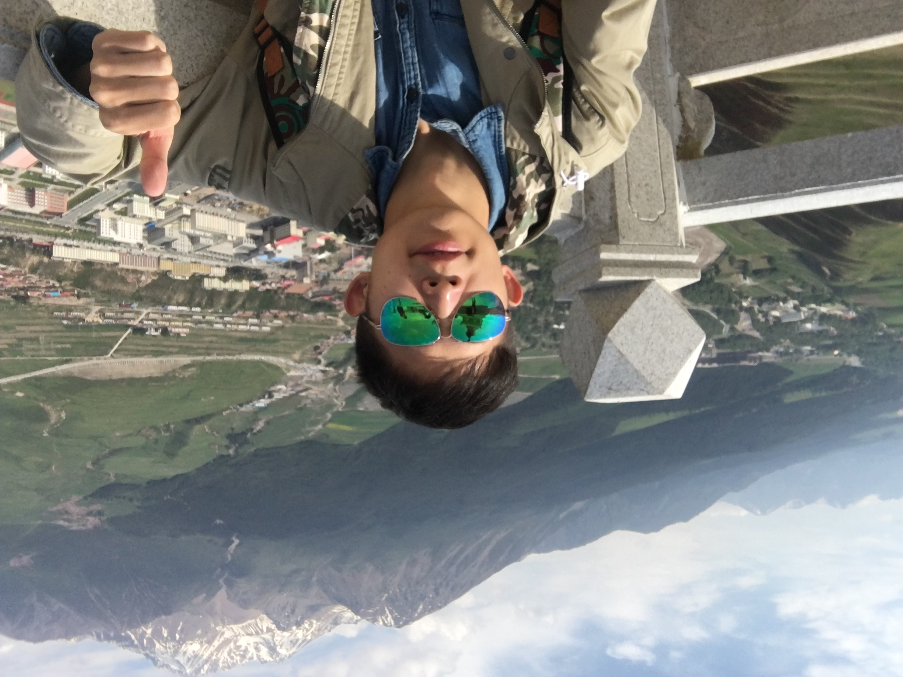

Jian Wang (王健)PhD Student
QT418, Department of Computing, |
 |
 [Github]
[Github]I am a first-year PhD student at The Hong Kong Polytechnic University (PolyU), advised by Prof. Maggie Wenjie Li. Previously, I was a visiting student at SIAT, Chinese Academy of Sciences from 2018 to 2019, advised by Prof. Min Yang. I received my M.Eng. degree and B.Eng. degree from the School of Computer Science and Engineering, South China University of Technology (SCUT) in 2020 and 2017, respectively.
Research
I have broad interests in natural language processing (NLP), particularly in dialogue systems and natural language generation. As two long-term goals, I expect to achieve:
- Building practical and intelligent dialogue systems. I am excited about simple and effective approaches that can be generalizable to real-world conversation scenarios.
- Developing principled and fundamental methods for natural language generation. I am interested in how human knowledge (e.g., factual, commonsense, etc.) can be reasoned and used in natural language generation.
Recently, I am dedicated to target-driven dialogue systems, with the objective of endowing a system with the ability to proactively lead the conversation.
Experiences
- 2020/11 - 2021/08: Research assistant at PolyU (Advisor: Prof. Maggie Wenjie Li)
- 2020/07 - 2020/10: Research intern at Rulai Inc. (Advisor: Dr. Yi Zhang)
- 2018/08 - 2019/09: Visiting student at SIAT, Chinese Academy of Sciences (Advisor: Prof. Min Yang)
Publications
2021
-
Target-guided Knowledge-aware Recommendation Dialogue System: An Empirical Investigation.
Dongding Lin, Jian Wang, and Wenjie Li.
Knowledge-aware and Conversational Recommender Systems (KaRS) Workshop @ RecSys, 2021.
[paper] -
Template-guided Clarifying Question Generation for Web Search Clarification.
Jian Wang and Wenjie Li.
ACM International Conference on Information and Knowledge Management (CIKM), 2021.
[paper] [slides] [code]
2020
-
Dual Dynamic Memory Network for End-to-End Multi-turn Task-oriented Dialog Systems.
Jian Wang, Junhao Liu, Wei Bi, Xiaojiang Liu, Kejing He, Ruifeng Xu, and Min Yang.
International Conference on Computational Linguistics (COLING), 2020.
[paper] [code] -
Improving Knowledge-aware Dialogue Generation via Knowledge Base Question Answering.
Jian Wang, Junhao Liu, Wei Bi, Xiaojiang Liu, Kejing He, Ruifeng Xu, and Min Yang.
AAAI Conference on Artificial Intelligence (AAAI), 2020.
[arXiv] [paper] [code] -
Topic Discovery by Spectral Decomposition and Clustering with Coordinated Global and Local Contexts.
Jian Wang, Kejing He, and Min Yang.
International Journal of Machine Learning and Cybernetics (JMLC), 2020.
[paper] [PDF]
Competitions
- [2021/06] Third Prize of 2021 Baidu Language and Intelligence Challenge: Multi-skill Dialogue
- [2018/12] Third Prize of Byte Cup 2018 International Machine Learning Contest
- [2017/10] Ranked 50th Worldwide on IEEE Xtreme 11.0 Programming Competition
- [2016/05] Shenzhen Area Site Bronze Medal of 2016 HUAWEI Code Craft
Professional Activities
Teaching Assistant
- TA for COMP 6709: Advanced Natural Language Processing, Spring 2022, PolyU
- TA for COMP 2021: Object-Oriented Programming, Fall 2021, PolyU
- TA for Design and Analysis of Algorithm, Spring 2018, SCUT
- TA for Advanced Language Program Design (C++), Fall 2017, SCUT
Conference Reviews
- COLING'22, EMNLP'21, COLING'20
Open-Source Projects
- 📖 Paper-Reading: Reading list in dialogue systems and natural language generation (constantly updating 🤗).
- 🐳 PyLoader: An asynchronous Python dataloader for loading big datasets.
Useful Resources
- ⏳ AI Conference Deadlines: Countdowns to top CV/NLP/ML/Robotics/AI conference deadlines.
- 📝 Writing Perfect Papers: A long talk on how to write perfect papers (by Prof. Baochun Li @UofT).
- 📰 Sebastian Ruder's Blog: Sebastian Ruder's blog with deep insights about NLP/ML/DL.
- 🍑 Lilian Weng's Blog: Lilian Weng's blog with broad learning notes about DL/NLP.
- 📸 Jay Alammar's Blog: Visualizations and animations for many language models (Transformer, BERT, etc).
- 📡 Scientific Spaces: Jianlin Su's blog (in Chinese) about ML|NLP theories with deep explorations.
- 👩🎓 Global Equality for PhDs: Resources to help global equality for PhDs in NLP/AI.
Misc.
-
I enjoy Chinese calligraphy and most of outdoor sports (especially basketball, table tennis, badminton). I also spend a lot of time on reading and movies.
-
I dream to travel around China, I also dream to travel around the world someday.